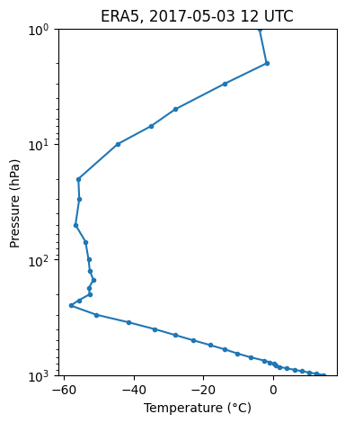
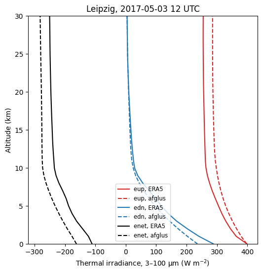

ERA5 atmosphere#
Replace the standard atmosphere with temperature, humidity, ozone and geopotential profiles from the ERA5 reanalysis for a given time and place, here Leipzig on 3 May 2017 at 12 UTC. It needs gcsfs, network access to the ERA5 archive on Google Cloud Storage, and config/thermal_config.yaml written by Broadband thermal (broadband thermal, 3–100 µm, surface emissivity 0.98). Background: Atmosphere & ERA5.
Setup#
import os
import logging
import warnings
from pathlib import Path
import numpy as np
import pandas as pd
import matplotlib.pyplot as plt
import xarray as xr
os.environ.setdefault('GRPC_VERBOSITY', 'ERROR') # silence gRPC fork notices from gcsfs
warnings.filterwarnings('ignore', category=FutureWarning, module='google')
warnings.filterwarnings('ignore', message='IProgress not found')
import gcsfs
import pyradtran # Registers the .pyradtran xarray accessor
# Show warnings only (set to DEBUG to see every uvspec call)
logging.getLogger('pyradtran').setLevel(logging.WARNING)
Load ERA5 data#
ARCO ERA5 (Analysis-Ready, Cloud-Optimized) is a copy of ECMWF’s ERA5 reanalysis in Zarr format on Google Cloud Storage, readable without downloading files. It provides global atmospheric profiles on 37 pressure levels at 0.25° resolution and hourly time steps.
Opening the store reads only metadata. The cells below select the time, the grid point nearest to the requested location and the variables the simulation needs, then load that column into memory. The ARCO long names (temperature, level, …) can be passed as they are; pyRadtran normalises them (normalize_era5(), Atmosphere & ERA5).
gcs = gcsfs.GCSFileSystem(token="anon")
path = "gs://gcp-public-data-arco-era5/ar/full_37-1h-0p25deg-chunk-1.zarr-v3"
era5_store = xr.open_zarr(gcs.get_mapper(path), chunks=None, consolidated=True)
requested_lat, requested_lon = 51.33962, 12.37129
time = '2017-05-03T12:00:00'
# Profile variables plus the skin temperature for the surface
era5 = era5_store[[
'temperature', 'specific_humidity', 'geopotential',
'ozone_mass_mixing_ratio', 'skin_temperature',
]].sel(time=time, latitude=requested_lat, longitude=requested_lon, method='nearest').load()
era5
<xarray.Dataset> Size: 908B
Dimensions: (level: 37)
Coordinates:
latitude float32 4B 51.25
* level (level) int64 296B 1 2 3 5 7 ... 925 950 975 1000
longitude float32 4B 12.25
time datetime64[ns] 8B 2017-05-03T12:00:00
Data variables:
temperature (level) float32 148B 269.2 271.3 ... 285.5 287.7
specific_humidity (level) float32 148B 4.012e-06 ... 0.005567
geopotential (level) float32 148B 4.73e+05 ... 1.682e+03
ozone_mass_mixing_ratio (level) float32 148B 4.291e-06 ... 8.745e-08
skin_temperature float32 4B 290.4
Attributes:
valid_time_start: 1940-01-01
last_updated: 2026-11-14 02:45:20.130337+00:00
valid_time_stop: 2026-06-30
valid_time_stop_era5t: 2026-11-08ds_to_sim = xr.Dataset(
coords={
'time': [pd.Timestamp(time)],
'latitude': ('time', [requested_lat]),
'longitude': ('time', [requested_lon]),
'altitude': ('altitude', np.arange(0, 100, 1)), # output levels 0-99 km
},
data_vars={
'tskin': ('time', [float(era5['skin_temperature'])]), # K
},
)
Run the simulation#
Pass the ERA5 column with era5_atmosphere=. pyRadtran writes it as a libRadtran radiosonde profile (temperature, humidity and ozone from the surface to 1 hPa); the background atmosphere fills in above. Because the profile brings its own humidity and ozone, the config’s h2o_mm and ozone_du scalings are not applied. The ERA5 skin temperature is the surface temperature.
from pyradtran import Var
config_path = Path('config/thermal_config.yaml')
ds_sim = ds_to_sim.pyradtran.run(
config_path=config_path,
era5_atmosphere=era5,
params={'sur_temperature': Var('tskin')},
save_to_file=False,
show_progress=False,
)
# Same run with the US standard atmosphere for comparison
ds_std = ds_to_sim.pyradtran.run(
config_path=config_path,
params={'sur_temperature': Var('tskin')},
save_to_file=False,
show_progress=False,
)
Distance to the nearest ERA5 grid point#
The selected grid point is not exactly the requested location. The haversine function gives the distance between the two:
def haversine(lon1, lat1, lon2, lat2):
# convert decimal degrees to radians
lon1 = np.deg2rad(lon1)
lon2 = np.deg2rad(lon2)
lat1 = np.deg2rad(lat1)
lat2 = np.deg2rad(lat2)
# haversine formula
dlon = lon2 - lon1
dlat = lat2 - lat1
a = np.sin(dlat/2)**2 + np.cos(lat1) * np.cos(lat2) * np.sin(dlon/2)**2
c = 2 * np.arcsin(np.sqrt(a))
r = 6371
return c * r
distance = haversine(
requested_lon,
requested_lat,
float(era5['longitude']),
float(era5['latitude']),
)
print(f"Nearest ERA5 grid point: {float(era5.latitude):.2f}° N, {float(era5.longitude):.2f}° E, "
f"{distance:.1f} km from the requested location")
Nearest ERA5 grid point: 51.25° N, 12.25° E, 13.1 km from the requested location
Results#
The ERA5 temperature profile, then upward, downward and net thermal irradiance against altitude, with the US standard atmosphere (afglus, its water column scaled to the config’s h2o_mm: 2.0) for comparison. Thermal output is in W m⁻².
fig, ax = plt.subplots(figsize=(4, 5))
(era5['temperature'] - 273.15).plot(y='level', ax=ax, marker='.')
ax.set_ylim(1000, 1)
ax.set_yscale('log')
ax.set_xlabel('Temperature (°C)')
ax.set_ylabel('Pressure (hPa)')
ax.set_title(f"ERA5, {pd.Timestamp(time):%Y-%m-%d %H} UTC")
plt.show()
print(f"Skin temperature: {float(era5.skin_temperature):.1f} K")

Skin temperature: 290.4 K
fig, ax = plt.subplots(figsize=(6, 6))
for var, color in [('eup', 'tab:red'), ('edn', 'tab:blue'), ('enet', 'k')]:
ds_sim[var].squeeze().plot(y='altitude', ax=ax, color=color, label=f'{var}, ERA5')
ds_std[var].squeeze().plot(y='altitude', ax=ax, color=color, ls='--', label=f'{var}, afglus')
ax.set_ylim(0, 30)
ax.set_ylabel('Altitude (km)')
ax.set_xlabel(r'Thermal irradiance, 3–100 µm (W m$^{-2}$)')
ax.set_title('Leipzig, 2017-05-03 12 UTC')
ax.legend(fontsize='small')
plt.show()
sfc = xr.Dataset({'ERA5': ds_sim[['edn', 'eup', 'enet']].sel(altitude=0).squeeze().to_array(),
'afglus': ds_std[['edn', 'eup', 'enet']].sel(altitude=0).squeeze().to_array()})
print('Surface irradiance (W m-2):')
print(sfc.to_dataframe()[['ERA5', 'afglus']].round(1))

Surface irradiance (W m-2):
ERA5 afglus
variable
edn 288.4 236.0
eup 399.0 398.0
enet -110.6 -161.9
The upward irradiance at the surface is set by the skin temperature (290.4 K) and is nearly the same in both runs. The downward irradiance is not: the moist ERA5 column returns about 288 W m⁻² to the surface, the dry reference column with 2 mm of water vapour only 236 W m⁻². The surface net thermal loss is therefore about 50 W m⁻² smaller with the real atmosphere. Higher up the downward irradiance of the two runs converges, but the upward irradiance does not: the moist ERA5 column absorbs more surface emission and emits to space from colder levels, so the outgoing irradiance above 10 km is about 30 W m⁻² lower than for the dry reference.